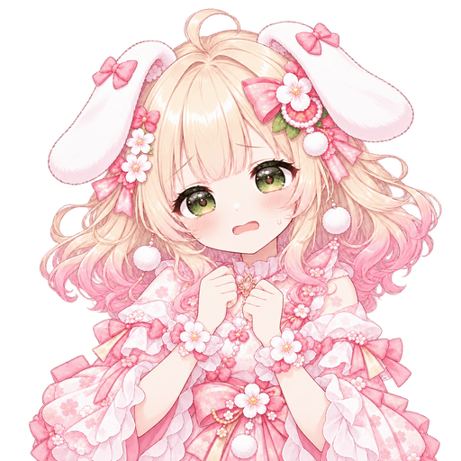
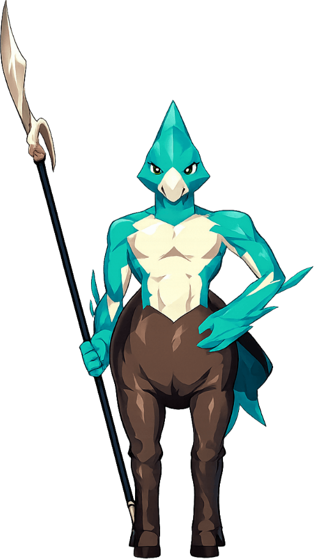

ROOM · MOMOSUKE
ももすけの部屋
ももすけ
？
🏆 たな🏆🎧📀

❓ ももすけが相談してきた(1日1回)
テストっち、この曲のサビ、どうしても指がもつれるの！！ どうしたらいい？
🎵 ビートの腕前 A★★★☆☆ 正確さタイプ
答えで「育ち方の向き」が変わり、部屋の棚・掛け合い・セッションで見せる腕前が変わります。Bは答えても向きは変わらず、仲良し度だけ
① 相談してくる: 部屋に「？」が出たら相談。ビート(曲の叩き方)・カード(デッキの組み方)・マスモン(編成)の3種類。答えで育ち方の向きが変わる
ROOM · SORASHIDO
ソラシドの部屋
ソラシド

🃏 デッキ箱🗃️🃏🏅
ソラシドが、守りの固いデッキに組みかえた
ももすけが練習で、はじめて HELL を最後まで叩けた
ききとももすけが、ビートで勝負(ききの勝ち)
MFバトルカード ・ 対戦の相手
ソラシド「鉄壁ガーディアン」
きのう組みかえた ・ 強さの段はそのまま A🎵 ビートの腕前★★☆☆☆ → ★★★☆☆
🃏 デッキ攻め ▮▮▯▯▮▮ 守り
🐾 マスモンドラゴン Lv.12
育つのは日々の過ごし方(練習・カード研究に行った回数)と相談の答え。A 対戦で出てくるデッキの中身も変わる/B デッキの名前と見た目だけ
② 育った姿が見える: 部屋の棚(トロフィー・デッキ箱)・掲示板・カード対戦の相手のデッキ名。数字は★で見せる
GARDEN · ERUBIN
中庭
🌳 中庭
 よーし、取ってこーい！
よーし、取ってこーい！

🐾 えるびんのマスモン Aケンタウロス Lv.18
🔁 再生次の再生で入れかわる(助手の中だけ)
✉ えるびんからのおさそい
テストさん、今日いっしょに神殿に行かない？ ケンタウロスも、行きたがってるんだ
⛩ 一緒に行くまた今度
A 神殿のバトルで横から応援(見た目とひとこと・数字は変えない)/B えるびんのマスモンが一緒に戦う(バトル部の調整が要る)
③ 助手のマスモン: 助手ごとに1体。ときどき中庭や部屋で遊んでいる。編成の相談・「一緒に神殿に行こう」のおさそい